Turn your family tree into a book and a website.
Flyleaf reads the GEDCOM file your genealogy program exports. From it, Flyleaf builds a book’s register, charts and index, and a website the whole family can explore. You write the stories, by hand or with an AI assistant. Flyleaf checks their citations and lists passages that look uncited.
The demo shows the Penhallows, a made-up family of five generations, from the Cornish tin mines to Wisconsin.
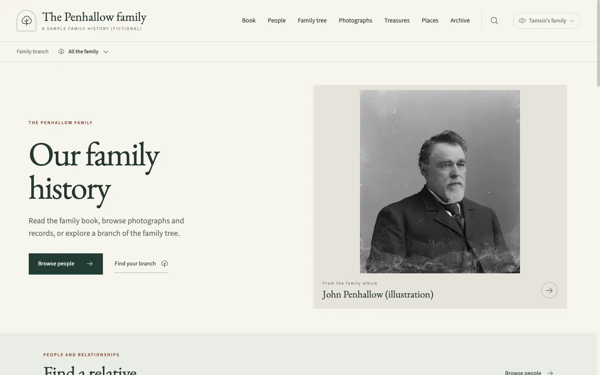
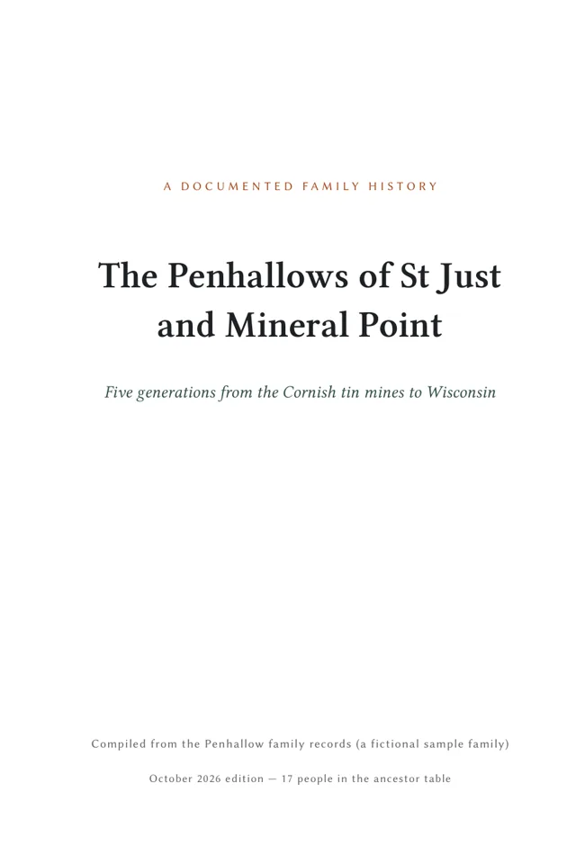
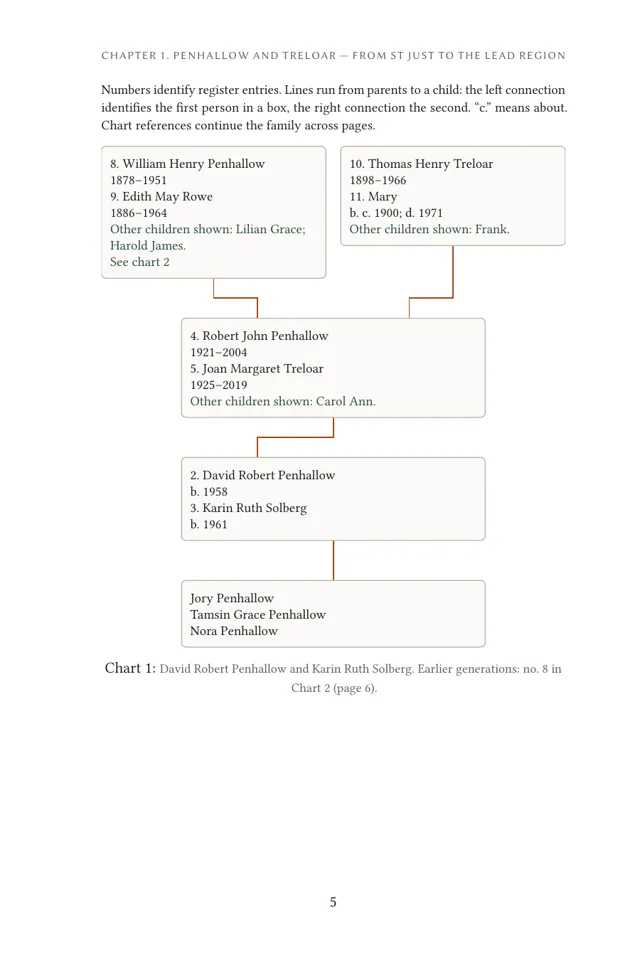
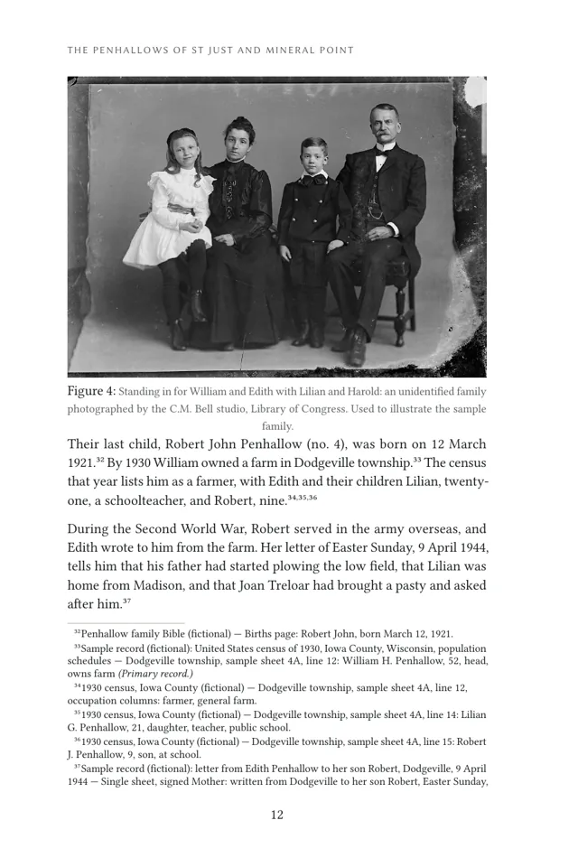
A family history you can print and keep.
The register, charts and index come from your tree. The stories, one for each ancestor, are yours to write. Flyleaf lays out both.
- A chapter for each branch of the family, with family charts.
- A register of every ancestor: dates, places, marriages and children.
- Footnotes for each cited birth, baptism, christening, marriage, divorce, death, burial and cremation, with the other sources listed by person. A bibliography, an ancestor table and an index of names.
- Ready for a printer: a 6 by 9 inch PDF with its fonts built in. With a fixed build date, the same time zone and the same Typst version, the same files make the same PDF.
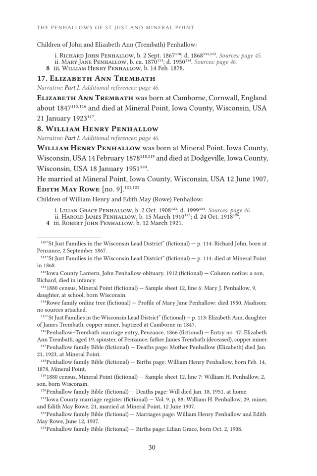
A website the whole family can explore.
The same book and records, made for browsing. Keep it private to invited relatives, or publish it for anyone.
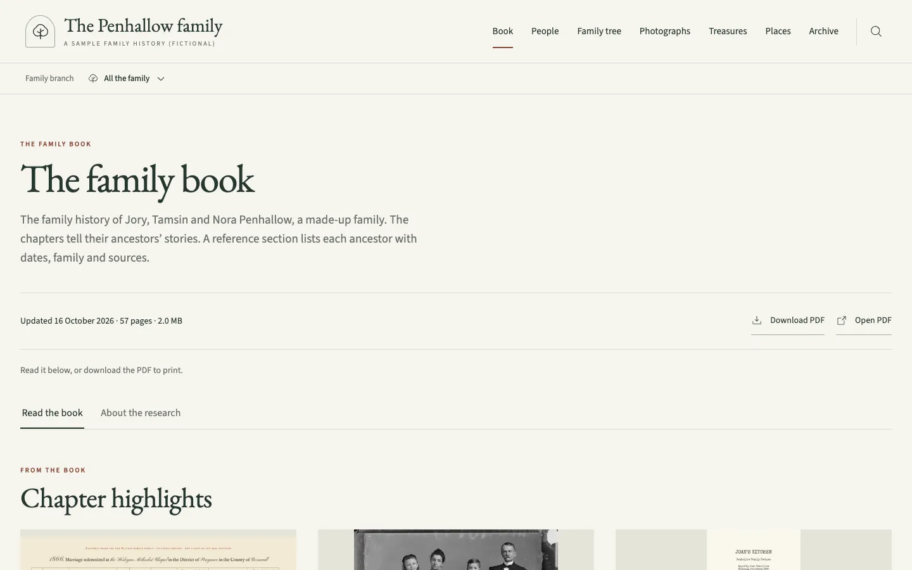
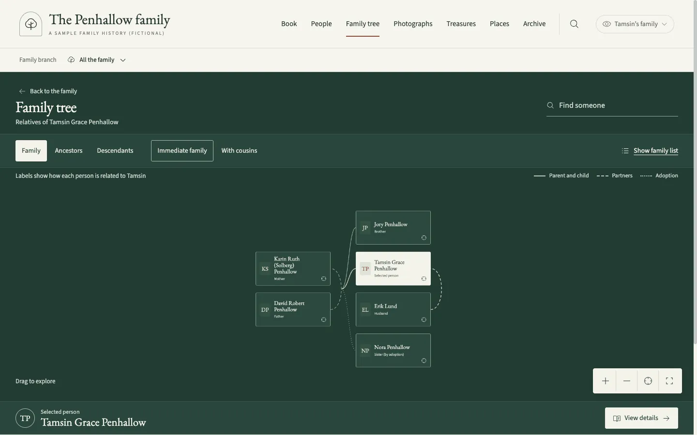
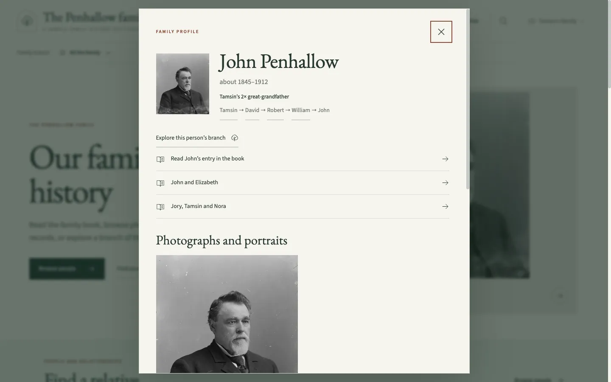
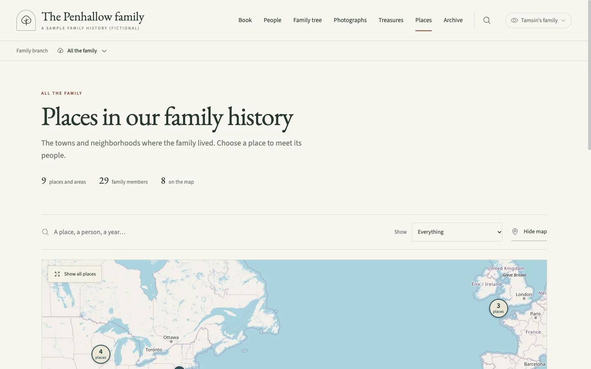
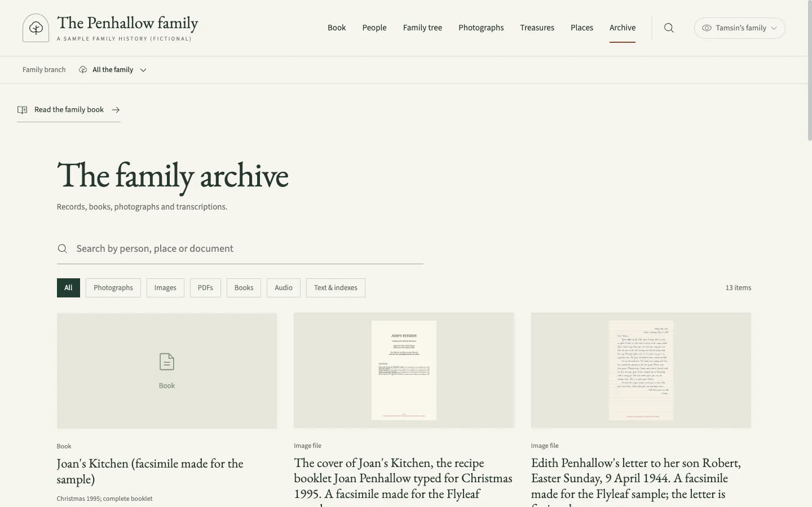
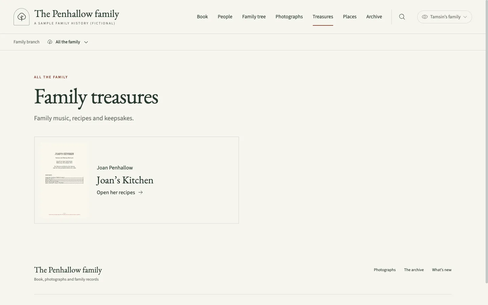
Honest about what is known.
Flyleaf is built for people who work to the Genealogical Proof Standard. It cannot judge your evidence for you. It runs these checks before it builds the book.
Sources under each fact
Cite a record under the birth, marriage or death it supports, and the register prints it as a footnote on that fact. The build stops if a story cites a source the tree does not have.
A confidence for each person
Primary, linked from other trees, family memory, or not yet researched. The build stops if a person marked primary has only weaker sources.
Stories that stay current
When a person's record changes, flyleaf coverage lists the stories about them to reread. It also lists passages with no citation.
From a GEDCOM file to a book and a website.
- Export your tree as GEDCOM from any genealogy program.
- Import it. Flyleaf gives each person an id and a starting confidence, and proposes the book’s chapters. Then
flyleaf bookbuilds the register, charts and index, andflyleaf site devshows a first website on your own computer. - Write a story for each ancestor, by hand or with an AI assistant. This is most of the work. The build stops on a citation to a source the tree does not have, and warns about passages that look uncited.
- Add photographs, records and places as you go, and build again.
Flyleaf 0.1 is an early release. It grew out of one family’s history and suits people at home on the command line, or working with an AI coding assistant. See writing the book. Flyleaf runs on macOS and Linux. You need git, make, Python, Node.js, Typst and Poppler; flyleaf doctor checks them. The quick start walks through each step.
# Get Flyleaf git clone https://github.com/ian-c-leonard/flyleaf.git cd flyleaf python3 -m venv .venv .venv/bin/pip install -r requirements.txt (cd website && npm ci) # Start a family and bring in your tree ./flyleaf new ../my-family --name "The Example family" \ --maintainer "Your Name" --email you@example.com ./flyleaf import my-tree.ged --family ../my-family --root "Your Name" # Write the stories, then build ./flyleaf scaffold --family ../my-family ./flyleaf book --family ../my-family ./flyleaf site dev --family ../my-family
A flyleaf is the blank page at the front of a book. In a family Bible, it is where people wrote down the births, marriages and deaths in the family.